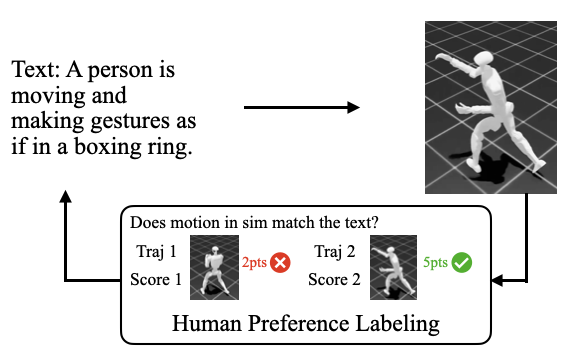
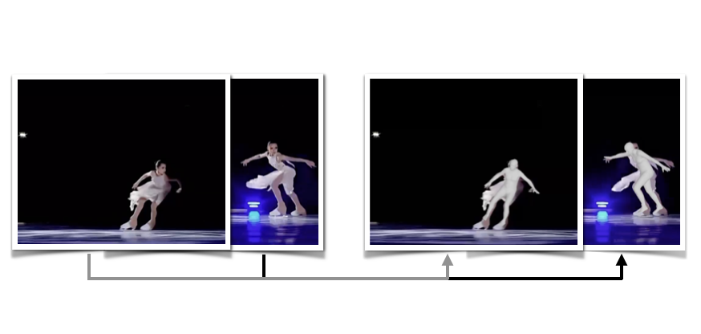
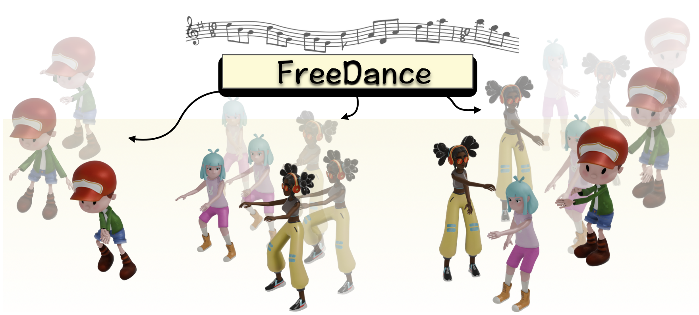
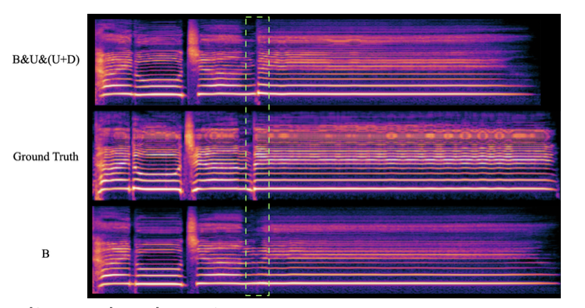
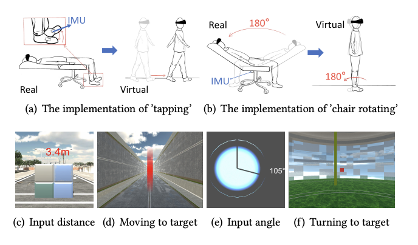
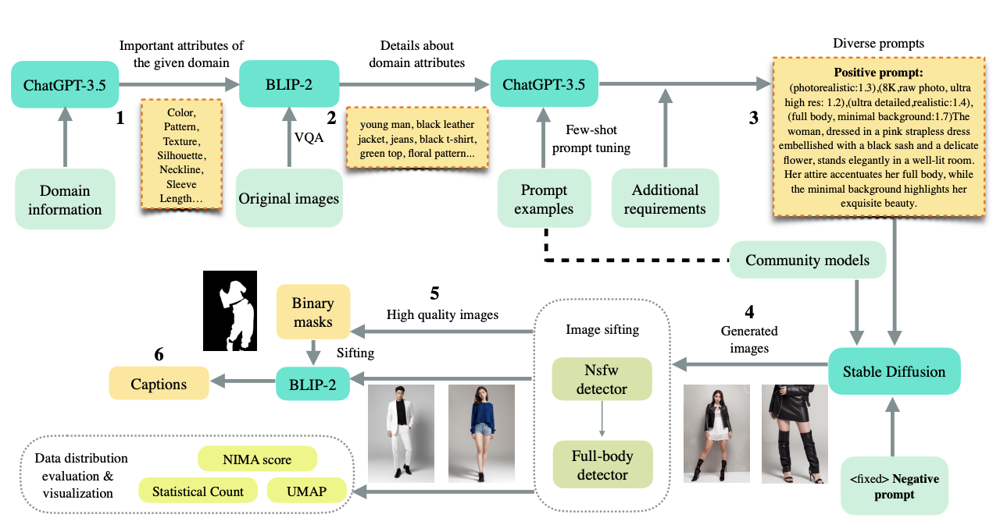
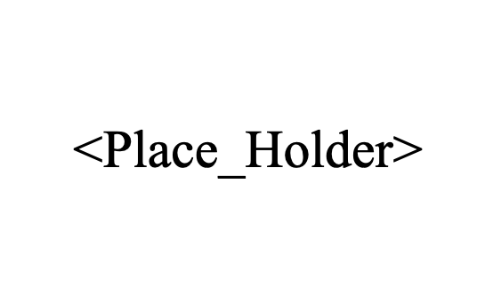

Projects/Publications
Recent Update: 2025-9-4
Projects

Fine-tune a motion generative model through human feedback.

Video-based human mesh recovery.
Conference Papers

FreeDance: Towards Harmonic Free-Number Group Dance Generation via a Unified Framework
ICCV 2025 | project page | code

Robust Training of Singing Voice Synthesis Using Prior and Posterior Uncertainty
ASRU 2025 | project page

Exploring Locomotion Methods with Upright Redirected Views for VR Users in Reclining & Lying Positions
UIST 2023 | paper
Workshop Papers

Fashion Chatroom: An Automated Pipeline for Fashion Dataset Construction
AAAI 2024 workshop | paper
Underreview Papers

ARECHO: Autoregressive Evaluation via Chain-Based Hypothesis Optimization for Speech Multi-Metric Estimation
in submission | arxiv
Adapting Speech Language Model to Singing Voice Synthesis
in submission